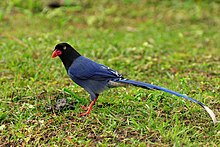

台灣藍鵲

又稱台灣暗藍鵲、紅嘴山鵲、長尾山娘或長尾陣仔等
生活習性與出沒地點
生活習性
除了繁殖季以外多成群行動，具有非常明顯的地盤保衛傾向。 大約每年3~7月為其繁殖期，牠們會以叫聲搭配飛舞進行求偶。 築巢時多選擇樹高的4/5處，選定地點後會雙方會一起尋找樹枝築巢，並持續約一星期。 台灣藍鵲前一季孵化出的幼鳥還會留守在巢邊，協助自己的親鳥餵食及防禦巢穴， 這也是其較為特殊的「合作育雛」行為。
出沒地點
主要棲息於台灣中、低海拔闊葉林中。 近年來已逐漸適應都市環境，因此在台北市也能見得到牠的蹤跡， 尤其在陽明山國家公園非常常見。
覓食
台灣藍鵲為雜食性。 主要以植物的根莖或果實為主，像是香蕉或木瓜也能食用。 有時也會吃幼鳥、蛋、昆蟲類、爬蟲類(蜥蜴、蛇)、蚯蚓、蛙類及小型鼠類等。 除此之外，有時還會吃一些廚餘、腐肉或夭折的幼鳥。
身體特徵
體長約65公分，尾部約占總身長的2/3。 虹膜為黃色，鳥喙及腳部為紅色。 除了頭部、頸部及胸部為黑色以外，其餘部位為藍色。 尾上飛羽末端為白色且具有白斑。 尾羽左右對稱且中間最長。
回首頁